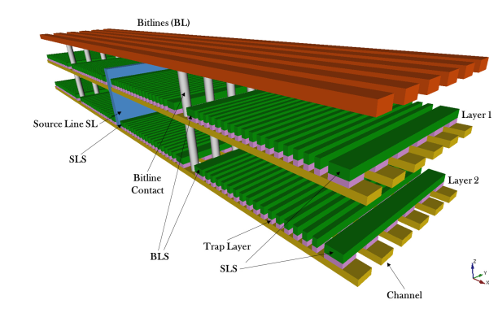
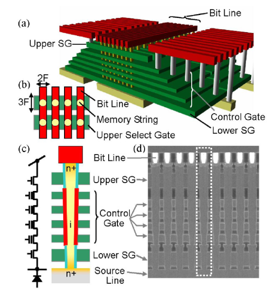
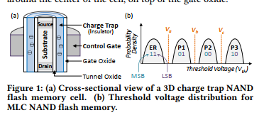

This document contains short description about all the research items read by Prawar Poudelduring his/her course of research. The items studied can be categorized into following classes.
Please follow the link below to jump to respective section:
Memory forms an integral component of every computing systems. These are the parts of the computer that are used for storage and retrival of code and data that are essential for operation of computers. It is these retrival of code and data the makes these computers or computing systems perform all the tasks that we, the user, instruct them to do.
When the term "memory" is used, it generally means the Random Access Memory (RAM) or the memory where the instructions for current (and maybe more) operations are stored. But, this is just a small part of memory system in a computer system. Now a reader might be wondering where the bulk files, multimedia, etc are stored. There is another memory, which is more generally called "storage". It is in this storage system that all bulk files are stored. In the conventional workstation computer settings, Magnetic Disks form the storage system. Nowadays, Solid State Drives (SSDs) are getting traction as well for storage purposes.
In the conventional computer settings, memory or RAM is composed of Dynamic Random Access Memory (DRAM). These memory loose their content when the power is removed, thus they form "Volatile Memory". Another example of volatile memory is SRAM, which is extensively used in caches in conventional PC settings while in embedded systems SRAM is used to serve as RAM.
Magnetic Disks and Optical Disks are some of the non-volatile memory as they do not remove their content when the power is turned off. These devices store the content as physical change in them, and this physical change do not depend on the power being supplied. However for SRAM and DRAM, they need to be supplied with power in order for them to function or retain their content.
Both the kinds of non-volatile memory (NVM) presented above, namely, Magnetic and Optical Disks are not semiconductor based. Thus, when people talk about NVM, these two are kind of left out. We will present a short description of these in the below section, however, they will not be major focus.
Semiconductor NVMs are based on the similar principle as Magnetic and Optical Disks in the sense that the content or the data to be stored in them are etched as a change in their physical property and they do not need a constant supply of power to hold the power. Flash Memory are currently the major semiconductor right now, and it has still not realized its full market potential. As metioned above, flash memories are used for storage purpose in newer computing systems as SSD drives while they have found their majoirty usage in portable storage media. In low-end computing systems, a special kind flash memory is even used for RAM memories. We will see about different kinds of flash memories in later sections.
Other semiconductor NVMs are listed below:
Resistive Random Access Memory (RRAM)
Ferroelectric Random Access Memory (FRAM)
Magnetic Random Access Memory (MRAM)
Phase Change Memory (PCM)
3D Cross Point (Optane)
Each of these have their separate sections below. Please find the approprite section and study the further descriptions presented. On each of the topics, will present a brief introduction and some relevant papers and their discussion.
Different issues are faced upon by the feature size shrinking of flash memory.
Intrinsic phenomena like random doping fluctuations, random telegraphic noise and the electron injection statistics significantly reduce the margin between the threshold voltage distributions.
Multi bits per cell has made things worse reducing reliability and lifetime.
3D NAND flash has provided with a way to overcome all the limitations of planar flash memory.
Most of the 3D NAND rely on charge trap flash architecture while some rely on FG architecture.
In this paper, they discuss about the charge trap flash memory and 3D NAND architectures based on the CT process.
Following are two of the topological classification of different integration solutions:
Control Gate and Channel along the horizontal direction: This includes 3D Stacked option which is the preliminary attempt to achieve 3D integration starting from planar technology.
Control Gate along the horizontal direction and channel along the vertical direction: This includes the architectures like BiCS, P-BiCS, and the V-NAND architecture from Samsung including VRAT, VSAT and TCAT.
3D Stacked Architecture:
first idea and straightforward idea that stacking multiple planar layers of memory arrays would yield 3D layer.

As shown in image above.
Here, drain and bitline contacts are shared between NAND strings belonging to different layers, while source/wordlines contacts and source/drain selectors are associated to separate layers.
Cost and process technologies considerations of this architecture can be derived from those of the planar products
the major hurdle is represented by the thermal budget of the manufacturing process to grow and populate additional layers
here each layer is manufactured separately and this the architecture is flexible.
Since the layers are fabricated independently, there is a significant difference in the threshold voltage distribution with ISPP programming.
BiCS Architecture:
Control Gates are the different rectangles stacked on top of each other.

The bottom rectangle plate is the ensemble of Source Line Selectors terminating flash string.
Multiple holes are drilled through the stacks and filled with poly-silicon in order to form a series of vertically arranged NAND flash memory cells.
Bitline Selectors (BLS) and Bitlines (BL) contacts are on top of the structure
Each cell in the BiCS architecture works in depletion-mode since the poly-silicon constituting the body of the transistor is lightly n-doped with a uniform profile or even left un-doped. This reduces the manufacturing complexity of the p-n junction along the vertical direction of the plugs (also called pillars)
The CG plate intersection with a pillar maps a single memory cell. Each NAND Flash string of cells is connected to a BL contact via BLS, whereas the bottom of the string is connected to a common source diffusion formed directly on the process substrate made of silicon.
Damages in 3D NAND can be partially recovered by a process called "self-recovery"
Self recovery has been studied for 2D NAND before to improve lifetime. Proposal also included to increase temperature to accelerate self recovery
Heatwatch proposed to improve 3D NAND relability. Key idea is to optimize the read reference voltage (adapting it to the dwell time of workload and the current operating temperature).
Heatwatch:
efficiently tracks flash memory temperature and dwell time online
sends this information to our reliability model to predict the current voltages of flash cells
predict the current voltages based on the current cell voltages
Improves lifetime by 3.85X over the baseline that uses fixed reference voltage
Limited lifetime of NAND is because of wearout in flash cells by repeated programming and erase operations. After each PE cycle, the threshold voltage is affected because of the inadvertant trap of electrons in flash cell.
Some of these trapped electrons gradually escape during the idle time between the consecutive PE cycle. This time is called "dwell time"
This escape or detrapping is called self-recovery.
This can be accelerated by high temperature to the flash cell during the dwell time in 2D FG transistors.
But 3D NAND uses CT flash
Two effects shown in flash memory is studied in this paper:
Retention Loss: Leakage of charge carriers from the flash cell that contains valid data, that can induce errors
Program Variation: Random variation that can cause cell to be set to an incorrect voltage while programming
Some of the findings made are as follows:
increase in dwell time from 1 to 137 min slows retention loss by 40%
lowering temp from 70 to 0 C slows retention loss by 58%
increasing temperature from 0 to 70 C during programming increases program variation by 21%
effectiveness of self-recovery is correlated with dwell time experienced during the most recent 20 PE cycles

Errors in 3D NAND is dominated by retention errors. Thus, reducing retention errors by performing recovery cycles can increase lifetime. Recovery cycle means PE operation where program operatin is followed by an extended dwell time.
High temp increases electrom mobility. Thus short retention time in high temperature has same retention loss as long retention time at room temp.
And short dwell time at high temp as same self recovery effect as long dwell time at room temp.
They refer to other papers [8,12,24] for technique to find the threshld voltage values.
Read retry and the above technique is used to detect threshold voltage and fine tune it.
NVM technology developed by Intel and Micron. Available under name Optane by Intel and Quantx by Micron.
Bit storage is based on change of bulk resistance. But differs from other PCMs in that it uses chalcogenide materials for both selector and storage parts. (3DXPoint is thought to be a subset of ReRAM also)
Full technical detail is not revealed by Intel or Micron. But it has been stated to use electrical resistance and is not based on electrons (like flash etc)
This paper describes Optane as well as formalized an unwritten contract of the Optane SSD violating which will result in 11x worse read latency and limited throughput.
Optane is Intel's 3D X Point memory with Micron.
It is available in various form factors including as a caching layer between the DRAM and block-device (as Optane memory), as a block device itself (as Optane SSD) and Optane DC Persistent Memory.
Of all the above, Optane SSD is the most cost effective and widely available option.
Following are the six (seven) rules for immediate performance of Optane SSD:
Uses should issue small requests for low latency (>=4KB) and keep a small number of outstanding IOs (Access with Low Request Scale rune)
Optane SSD should not consider sequential workloads unlike HDD/Flash SSDs. (Random Access is OK)
Avoid parallel access to a single chunk to avoid contention among requests (Avoid Crowded Access rule)
Control the overall load of both reads and writes to control for optimal latency.
Never issue request for less than 4KB to exploit bandwidth of Optane SSD
Requests issued to Optane SSD should align to eight sectors for best latency.
When serving sustained workloads, there is no cost of garbage collection in Optane SSD. (Forget garbage collection)
Access with Low Request Scale:
Optane claimed to be upto 1000x faster than SSDs. But is it?
Optane SSD users should issue small requests and maintain small number of outstanding IOs.
Needed to extract low latency but also to exploit full bandwidth of Optane SSD
Variables of analysis are (i) request size and (ii) queue depth. Analysis of read and writes are performed.
For read operation, large request size and large queue depth does not work better with optane SSD.
For write operations, they are almost comparable in all the cases while optane still being poor for large request size and large queue depth.
Optane internally uses RAID like organization of memory dies.
The interleaving degree (number of channels) of the Optane and SSD are examined through experiments (ref 18 and 19) and found out to be 7 and 128 respectively. The info of 7 channels is also found in hardware description ( ref 3).
This shows Optane has limited internal parallelism.
The limited parallelism is one reason that Optane performs better with small number of queue depth.
Random Access is OK
In SSD and HDD, better performance is seen with sequential access than random access. But, Optane is random access block device.
Experiments were performed for this for both SSD and Optane based system to prove.
Flash SSD performs better on sequential while Optane has comparable performance for read operations.
For smaller sized requests, Optane actually favors random writes over sequential writes. Similarly, flash SSD favors sequential writes only for small request size while in other cases, they are comparable.
Optane prefers random access because of the ability to perform in-place updates in 3D X Point memory. In Optane, there is no difference in address translation cost for random versus sequential workloads.
Avoided Crowded Accesses
The client should not issue parallel access to a single chunk in Optane based system because Optane SSD contains shared resources.
Experiments performed to study the performance by issuing parallel requests for different sector within same chunk.
Latency increases with increase in queue depth.
Control Overall Load
For optimal latency in Optane SSD, client must control overall load of both reads and writes
Observation derived from performance of Optane serving mixed reads and writes. In the experiment, we issue random 4KB requests, varying the percentageof writes from 0% to 100%, with QD= 64 (large enough toachieve full throughput for both Optane SSD and Flash SSD).
In Optane, reads and writes are treated equally. Latency plot overlaps for the plots with different ratio of writes/total access.
Latency was not a function of writes vs reads, but is dependent upon other factors of overall load.
For flash SSD, write operation increases the latency.
Avoid Tiny Accesses
Client must not issue less than 4KB request.
Latency might be same for small requests but for maximizing throughput it is better to issue 4KB request.
Issue 4KB Aligned Requests
For best latency, request should be aligned to 8 sectors that is 4KB.
In the experiment,we measure the latency of individual read requests (QD= 1);each read is issued to a position A+offset, where A is a random position aligned to 32KB and offset is a 512-byte sector within that 32KB.
A periodic latency observation is made which shows Optane favor aligned requests.
Best is when request are aligned to 8 sectors
Forget Garbage Collection
No need to worry about garbage collection of Optane
In Flash SSDs, after the device is full, any further writes is slow because it triggers garbage collection. But the write latency foe Optane is sustained which shows garbage collection has no cost.
Optane SSD has LBA_based mapping. I have to study this myself later on.
Flash performs log-structured based file system thus the throughput pattern occurs when we read according to written order.
Following is the list of papers studied while creating this document. The description of each papers are maintained and linked here so it would be easy for anyone doing a survey to fetch the appropriate description in timely fashion.
This paper discusses seven techniques for generating fingerprints from flash memory. Published in 2011, the author P Prabhu was affiliated with UCSD while collaborators are from Cornell University. The original paper can be found at this link. Their conclusion is the four of the seven techniques provide usable signatures.
The set up consists of Xilinx FPGA connected to the flash chip through a custom built flash controller. The measurements can be made with a resolution of 10ns.
Program Disturb: It is possible for two bits in separate pages to electrically influence each other. Program operation in a page might induce an mild programming force in an unselected word line. For generation of signature, repeated program operation is performed in a page. After each program operation, the state of adjacent page is read out to record the number of program operations required to cause the flip in each bit of adjacent page. This operation is performed for all the bits in the adjacent page. The number of program operations performed is limited to 10000. For the bits that are not affected, the value of 0 is recorded.
The signature is page based and thus thousands of signatures can be extracted from a single flash memory. The time it takes is between 1-5 minutes.
Read Disturb: The idea behind read disturb is similar to Program Disturb. Since for read operation, a small current has to be suppled as read current, this current might influence adjacent flash page over a number of times.
The number of read operations in a flash page to influence adjacent flash page is limited to 10 million times while the state of adjacent flash page is read after every 1000 read iterations. Despite having good metrics for correlation (high for signature generated from a single page while almost 0 for those from different pages), it is too slow process. It almost took 6 hours to have useful signature for MLC chips.
Program Operation Latency: This technique is based on per-bit variation in program latency.Program operation is performed one bit at a time and the latency is recorded such that a single bit contributes a single value to the fingerprint. There are two following variations of the technique as discussed below:
Single Page: Following steps are followed for fingerprint generation:
Erase the block.
Program each bit in a page within a block as follows:
First program operation programs a single '0' followed by ones.
Second program operation programs two '0's followed by ones.
.. and so on.
Multi Page:Following steps are followed for fingerprint generation:
Erase the block
Program just the nth bit in page n.
.. and so on.
Other proposals that were deemed unuseful are as follows:
Erase Lantency:
Measure the erase latency for each block in a device and use the resulting sequence of values to form a signature. Offered very little variation, and were inconsistent for individual blocks.
Read Lantency:
Per-page read latency varied very little. In SLC, read latency was constant over entire device.
Whole Page program Latency:
Whole page program latency offered very little vairation to offer good signature.
Program/Erase Wear:
Measuring each bits susceptibility to error because of program/erase induced wear took several hours to extract signature thus making this method ineffective.
This paper demonstrates NAND flash memrory as a source of entropy for TRNG and PUF generation, and is work done by Wang et al at Cornell University. The idea is based on repeated partial program operation on the flash memory. The original paper can be found at this link.
For RNG, they make use of the Random Telegraphic Noise (RTN) as the source of randomness. RTN is the alternating capturing and emission of carriers at a defect site in a very small electronic device. This capturing and emission, that is random and exponentially distributed, generates discrete variation in the channel current.
To observe this noise, the flash memory needs to be in unreliable state so that noise effects the outputs. Thus partial program operation is used to achieve this state that is in-between erased and programmed state. The initial algorithm is described as follows:
The flash memory block is partially programmed. The duration of partial program applied is T (unspecified)
The flash memory block is read N times.
Then, for each of the bits, it is checked if there exists RTN.
If it does, the number of partial program operation it took is noted, and the bit position is marked as selected.
This partial program operation is repeated until all the bits are marked selected. Go to step 1.
The second part of the algorithm, then can be used to generate RNG.
Partial program the flash cell to appropriate levels (as dictated by the number of partial program operations from above)
Read each bit M times
Record the sequence of up-times and down-times. Since it is RTN, the duration of being up-times and down-times are randomly distibuted.
Produce Random bits from the up-times and down-times. If the time is odd, output 1 else output a 0.
Perform debiasing
For the device fingerprint, repeated partial program operation is utilized. Following describes the steps involved:
initialize bitRank[i] = 0 for i = all bits in a page
Perform partial program operation of flash page (T < rated program time)
For all the bits in page:
If the bit is programmed and bitRank[this bit] = 0, bitRank[this bit] = partial program number
1Goto Step2 until 99% bits in the page are programmed
This essentially records the order in which the flash bits attain programmed state from erased state in a flash page.
This paper characterizes the errors and source of errors in flash memory. The authors were affiliated with Cornell University at the time of publication. The original paper can be found at this link.
Since this is not focused about PUF but analyzing the nature of variations in flash, will populate later
This paper presents three techniques for PUF-based key generator using NAND flash memory. The techniques are partial erase, partial programming and program disturbance. The primary author was a member of Data Assurance and Communication Security Research Center, China. The original paper can be found at this link.
This paper focuses on robust keys rather than just determinig keys from the flash memories. They find the cells in the flash memory whose output are the most reliable over the life time of the flash memory. The position of such flash cells is the helper data.
Partial Erase based operation is more or less similar to the idea proposed in Wang et al. paper presented above. However, since this proposal is based on partial erase opration, the number of (fixed duration) partial erase operation that it takes for each flash cell in a page is recorded and is the identity for that particular cell. In a way, it captures the order in which the cells attain erase state from a programmed state.
The total number of partial erase operation is limited however to PENum. For some cells that do not attain the partial erase state even after the max number of partial erase operation performed, they are assigned PENum+1.
Partial Program based operation is exactly same as partial erase based operation above. Here, the order in which the cells attain erased state is recorded as the number of (fixed duration) partial program operation required by each flash cells to attain programmed state is recorded. After a fixed number of partial program operations PPNum, the cells that are still not in programmed state are assigned PPNum+1
Program Disturb based PUF generation induces disturbance in adjacent flash page by performing repeated program operation in a page. Here, fixed number of program operation is performed and after each of the program operation, the state of adjacent page is recorded to see if any cells might have been programmed enough to change their state to programmed state. Following the same suit, here again the number of program operations in the flash page is recorded for each of the flash cells in adjacent page it is needed to flip their state.
For reliable cell selection, they employ two methods as follows:
Bit Map Method:
First the raw PUF values for a certain address location is noted. These address location is genrally adjacent locations and the raw PUF values are obtained from any of the three methods above.
Between the adjacent values listed above, a difference is computed and absolute of this value is computed as ADvalues.
Based on the need, the top n-values from among all the ADvalues are taken. As helper data, the selected pair is assigned 1 and rest unselected pair are assigned 0.
For the final key, the two values used to compute the ADvalues is again checked. For each ADvalues, if the former of the two values is greater, then key at that position is 1 otherwise it is assigned 0. Using 6-flash cells, we get 3-bit key.
Position Map Method:
Here instead of selecting the adjacent flash cells, the flash values are first sorted from small to large based on raw PUF values.
The lowest three values from among the selected raw PUFs are grouped with the highest three values, ie lowest with highest, lowest-second with highest-second and so on.
The cell position of each of the raw PUF values are brought in pair. This is the helper data.
For each pair, if the former raw PUF is higher than latter, key generated is 1 while 0 otherwise. Using 6 positions, we get 3-bit key.
This is not a paper but a tutorial session presented by Sanu Matthew. Matthew was with Circuit Research Labs, Intel @ Hillsboro, Oregon while this presentation was made in ISQED 2020.
This is not NAND based, but 14nm CMOS based, and is presented here because of the idea it has. The publication for this can be found at this link.
The idea presented can be divided into two major categories:
First: There is noise in devices, so suppress the noises. There is process variation in devices, so amplify variation to create a physical identity of a device. Extract static entropy, ie entropy that remains same throughout the lifetime.
Second: There is process variation in devices, so suppress the process variation. There is noise in devices, so amplify the noise for randomness or entropy generation. Extract dynamic entropy, ie entropy that is changes.
The idea for PUF generation or TRNG genration presented is to select the candidate bit for either operation. So, a selection criteria is selected, for example: read the bits multiple times (64 times as presented), and pick the ones with higher bias (either towards 0 or 1 state, determined using entropy computation) for PUF generation. Time varying bits can be used for TRNG purpose. This is based on the idea that the bits are time-variant, thus Temporal Majority Voting (TMV) is used. This idea can be easily ported in case of flash memories combined with the idea of flash cells oscillating. Please refer to this paper.
The idea of self-calibration is presented whereupon entropy is tracked for TRNG. If the output of von-Neumann extractor for TRNG is less than 1bit/cycle, then a different column is chosen for TRNG. (the entropy source bits are arranged in 64x8 organization of rows and columns)
This document presents PUF generation for NOR flash memory. The author was associated with Virginia Tech and the document is the master's thesis of author. The original document can be found at this link.
The platforms used for demonstration of their idea is Altera DE1-SoC and Altera DE2-115.
The basic idea used in this project is partial programming. The threshold volatge variation is utilized to generate PUF. Here, the address of the flash memory location is the challenge and the response is the bit position of the cell with minimum threshold voltage. Essentially, the idea is to find the flash cell that gets programmed first while applying repeated partial programming operations on a flash memory location.
Following are the steps involved:
A partial programming time T is chosen for a flash location.
The flash location is erased.
Program the flash location for duration T
Read the value of the flash location
If any one bit are flipped, the location of the flipped bit is encoded into 3-bit form
If nore than one bit is flipped, T is reduced and go to Step 3
Else, go to Step 3.
This document presents PUF generation and TRNG for Superflash NOR memory. The author was associated with Arizona State University. The original document can be found at this link.
The main idea exploited in this paper is the erase speed variability for the flash cells. The memory used in this research is 1.5T SST Superflash memory that has faster erase because split-gate flash memory has different organzation than stacked gate flash memory.
Since such memory are higly efficient, program operation takes only one clock while erase requires multiple cycles. Thus in this research, they employ partial erase operation by interrupting erase operation. Erase operation, however, is yet very fast to be interrupted at nominal operating condition, thus the operating voltage VDD is reduced to lower the internal charge pump voltage.
Interrupting erase operation shows that the number of flash cells that attain erased state increases monotonically with higher erase times. They pick up a time that gives a little more than 50% 1's (flash cells in erased state). The distribution at this point in time shows that the flash cells in each of 1 and 0 state are almost randomly distributed over the block.
For authentication, the same operation is repeated but such that it yields less than 50% 1's. The idea is again based on monotonicity: this means that if a binary signature with (for example) 45% 1s is compared with (challenge code) 55% 1s signature, the bits that are 1 in 45% signature should already be at 1 in 55% signature.
This paper demonstrates a technique for generation of PUF from NAND flash memory such that the PUF is aging-resistant by introducing tunable-parameters. Authors of this papers were associated with The University of Alabama in Huntsville while it was published. The original paper can be found at this link.
The basic idea behind the PUF generation in this article is program disturb. However, this program disturb method differs from previous proposals in the sense that here a single flash memory page is stressed and analyzed (unlike previous implementations where disturbance in adjacent page were observed).
Following are the steps involved for PUF generation:
Erase a flash block.
In the page of interest, program with all-ones data pattern except the last 32 bits which are programmed to zeros.
Perform repeated program operation in the same page with the same data pattern.
This repeated program operation (albeit with 1s) should cause the some flash cells to be weakly programmed.
Thus, after certain number of program operation, some of the flash cells will start to read as 0 despite being programmed with 1.
The idea is again based on the sequence in which bits attain the programmed state. Here, after application of certain number of program operation, the state of flash cells is recorded as the signature of the page. The number of program operation is chosen such that sufficient number of flash cells have attained programmed or 0 state.
Repeating the same operation on the same page of flash memory should yield the same signature except for a few unstable bits.
These unstable bits are filtered out to generate more accurate PUF. For this, a plot with the progression of flash page from complete erased to programed state at different stress-levels (number of program operations) is plotted. Based on observation from this plot, two different threshold stress-levels are identified: one at the early stages to identify stable 0 cells (PS0) and second at the late stage to identify stable 1 cells (PS1). This gives the idea about the flash cells that attain the programmed state quickly (stable 0 cells) and cells that resist the change and maintain their state for longest (stable 1s).
To generate the PUF of n-bits, at least n/2 stable 0s are generated and rest are stable 1s are obtained, thus removing the unstable flash cells that change their state in between the two thresholds discussed above.
To obtain at least n/2 stable 0s, PS0 program operations as discussed above are performed. This will flip at least n/2 bits to 0 and gives information about the early flippers or stable 0s. Next, the page is stressed for PS1 program operations, and ensure that there are only n/2 erased bits left. These are stable 1s. The complete sequence (entire page) is compared at states PS0 and PS1 applied. If the states of the flash cells are same, they contribute to the PUF, else they are unstable bits.
For authentication, the number of stresses to be performed is between the PS0 and PS1 (PS0<PSU<PS1).
With usage or aging, the rate of bits that flip from erased to program state with program disturb decreases and might present issue for PUF. To counter this, PSU is adapted with the usage rate that page has endured.
PSUnew = PSU+k*npe, where
k is constant derived from characterization
npe is the number of program-erase the page has endured
PSU is the number of program operation required to generate PUF in fresh consition
Utilize erase suspend operation in flash memory. They use Superflash from microchip, but most of their explanation follows from FG NAND flash memory.
They generate 16-bit random number in 1ms
They perform gradiant analysis of erase operation and since the gradiant is more stable at the later part, erase suspend at that area is more suitable for device fingerprint extraction.
For fingerprint:
erase sector
program the sector
suspend the erase operation
note the positions not erased. their fingerprint is the unerased bit position
the process is repeated until the required number of bits are reached (lenght of fingerprint)
The content here is derived from the proposal that was submitted to NSF by Dr Biswajit Ray and Dr Aleksandar Milenkovic.
The major idea is that instant deletion of data from the memory has become extremely important to preserve privacy of the user. According to Data Protection Act (DPA) 2018, the deletion of imformation should be real and should not be recoverable in any way. However, current trend in SSD's do not offer any permanent data deletion strategy.
NAND flash or flash memory in general follow the trend of erase before write paradigm, which means before any program operation erase has to be performed. But the granularity of erase (a block) is much larger than program (a page), thus for any modification of data is performed by copying the entire data, modifying it and writing it to a new location. The old data is simply marked as invalid or is unlinked where the original data content still remains. These pages are technically unreachable or unaddressable through the Flash Translation Layer (FTL).
For the page level deletion of data, Wei et al introduced the concept of "scrubbing", which means write 0s to all the flash memory location. This corresponds to essentially deletion of data from a page by program operation. Program operation is possible in page-level granularity, thus deletion from page is possible. However, the "scrubbing" technique does not properly delete the data. There has been experimental demonstration where the data is recovered from a "scrubbed" flash memory by analyzing the physical property of the scrubbed flash memory.
The content here is still derived from the same proposal.
Block Erase: Erase the complete block. This means the charges trapped in the Floating Gate is removed. Garbage Collection of FTL uses this mechanism to remove the contents or free space when the drive is almost full. Poor performance because of significant data movement.
Logical Sanitization: To overcome the performance hit by block erase, logical sanitization is performed. This works by simply invalidating the data that are obsolete. The old data still remains in the memory.
Encryption Based Sanitization: Encrypt the user file and store the data and key in separate blocks. Remove the keys, thus securely invalidating the data.
Digital Sanitization (Scrubbing): Write 0s to the memory in page-level deletion strategy.
Analog Sanitization: Perform repeated partial erase operation until completely erased.
The content here is derived from the paper that can be found at this link.
It is challenging to erase a file without large performance penalty or reliability issue in modern NAND. Evanesco is a new technique for high-density 3D NAND flash memory. Evanseco, instead of physically destroying data, blocks access to the data. Two commands, pLock and bLock are designed that block access to the page and block respecively of the data deleted. These locked memories can only be accessed after erase operation, thus the claim is that a strong security is guaranteed. Erase or program based data deletion technique will rapidly reduce the quality of the flash memory.
Performance analysis done on 160 3D TLC NAND memory on FlashBench with their proposal enabled flash model. Benchmarks are workloads collected from enterprise servers and mobile systems.
In the new architecture, a read request to the locked location will always return all 0s.
FTL is the special embedded software that is employeed in flash-based storage system. FTL writes in append-only fashion which means new data is stored in a new physical page for performance reasons by avoiding longer block erases. Thus a logical to physical mapping table (L2P) is maintained. For updating a data, the updated data is written to a new free page, the link in LPA table is updated to new physical address, state of new physical page changed to valide from free and the old physical page's state is made invalid.
When the system is about to run out of the free pages, a Garbage Collector is invoked. This reclaims the free pages by erasing victim blocks (blocks with invalid pages). If there are valid pages in the victim blocks that are to be erased, these pages have to be copied elsewhere first, and remapped in the L2P.
The trend of having a multple copies of a file while updating (or deleting) a file is called data versioning problem in this paper. Experiment to measure how many invalid versions of a file exist throughout the lifetime of a file is conducted. Tools used are: VerTrace, an extension of IOPro and FlashBench (they made all three of these tools). Essentially, the goal is to keep track of number of valid and invalid pages of a file at any time in the flash memory. Three benchmarks traces, Mobile, MailServer and DBServer are used. Maximum storage emulated is 16GiB. Ultimate goal of the evaluation is to find the number of invlaid versions of file that exists and for how long the invalid versions remain.
Types of files:
Uni-version: File when modified such that content of older version is a subset of new file ie file at time t is subset of file at time t+1.
Multi-version: Any file that is not Uni-version file.
Quantities measured for each files are:
Version Amplification Factor: Maximum of (for all time of observation (ratio of invalid pages to valid pages))
Total Insecure Interval: Time for which the number of invalid pages is greater than 0.
The observation show that files have a large number of invalid pages for a long time.
Existing technique destroy data by changing Vth of flash cell. Scrubbing technique increases Vth of all flash cell in WL so that Vth distrubutions of different states are mixed together such that original data identification is impossible.
But this technique is not efficient in MLC or TLC NAND as there are multiple pages in a single Wordline. Thus efficient reprogramming based sanitization technique is proposed for MLC NAND memory. This technique uses one-shot programming technique with lowered voltage such that content can be safely destroyed, and other pages in the same wordline is not impacted. Zero copy overhead is incurred as there is no copy operation needed. Sanitization of LSB and MSB can be independent. But there is always chance of overprogramming, so that the shift of Vth is too much.
The content here is derived from the paper that can be found at this link.
The access to the page is controlled by access-permission (AP) flag. Two kinds of AP flags: pAP (for page) and bAP (for block) inside the flash chip that are controlled by two commands pLock and bLock respectively. Command pLock<ppn> locks the physical page number ppn by setting the pAP flag to disable state. Similarly, bLock<pbn> blocks the access to the physical block number pbn by setting bAP flag to disabled state. No unlock commands are present and unlock is automatically done once the block is erased. Thus data is permanently inaccessible before erase cycle once locked. The logic is implemented into the flash chip itself.
Page Level Sanitization: For each page, along with the main area of data storage, some spare storage space for flags storage is available. The flags are stored in this location. For every access made to a page, the data copied to the cache or buffer is only sent to output if the flag value pAP is not disabled. Since in MLC and TLC, multiple flags are needed in each WL. For individual programming of these cells, self-boost program inhibit (SBPI) is used that allows flash cells in a single WL to be selectively programed by choosing different voltage settings for different BLs.
Block Level Sanitization: If a large number of pages are to be sanitized, PLock becomes non-trivial and incurs overhead. A single block sanitization can sanitize a large number of pages at once. This only works in 3D as the bAP flag is implemented in SSL (Source Select Line) of 3D NAND as 3D NAND use normal flash cell (that allows for SSL to act as WL) for SSL rather than transistor.
The original paper can be found at this link. This paper was presented in USENIX FAST2020 and was awarded best paper.
Large scale study focused on enterprise storage systems, study conducted on 1.4 million SSDs of NetApp which is a major storage vendor.
Netapp storage system employ WAFL file systems and DATA ONTAP operating system which uses software RAID to provide resiliency against drive failures.
Data over the nw is serviced using file-based protocols as NFS and CIFS/SMB or block-based protocols such as iSCSI
Netapp systems in field send weekly NetApp Active IQ bundles that track a very large set of system and device parameters. This study is based in mining this collection of NetApp Active IQ messages.
Different types of failures are categorized. The most severe of them that prompts replacement of drives was SCSI error. These error are due to ECC errors. Majority of other errors were recovered by RAID reconstruction.
Replacement rate: number of device failures divided by number of device years.
For the causes of errors or the factors impacting replacement rates:
Usage and Age: A increasing failure rates of long period 12-15 months in the beginning, and 6-12 months of decreasing failure rates before finally stabilizing for 3D-TLC and eMLC (enterprise MLC) drives.
3D-TLC failure rates is higher than other types, thus the replacement reateis higher. Also 3d-TLC uses 10-15X times more for spare blocks
Higher capacity drives have higher replacement rates and more severe failures too (unresponsive drives).
High density drives have higher replacment rates.
EMphasize importance of firmware updates
Most of the systems make use of only 15% of rated life of device, thus there should be no concern to updatd to QLC.
This is a presentation that can be found at this link. It was presented by Matais Bjorling, Director Solid-State System Software of Western Digital at USENIX 2019.
Presents forward-looking statements regarding Solid State techs, product development efforts, software development etc
Open Channel SSD architectures:
No FTL present but leaves the management of device to OS. Linux 4.4 kernel supports Open Channel using NVM Express specification.
Chunks: Zoned namespace
Parallel Groups: Endurance management groups.
Let us First talk about zoned storage itself (this link):
It is a class of storage devices that is divided into zones. Each zones have a write pointer that keeps track of position of next data to be written.
Data in a zone cannot be overwritten and must be erased first.
SSDs can also implement zoned interface to reduce write amplification, reduce the device DRAM needs and improve quaity of service at scale.
Support for zoned storage was added to Linux in version 4.10.0, and is based on Zoned Block Device abstraction. The interface associated with ZBD is an extension to traditional Linux block device interface.
Zoned storage is used in Shingled Magnetic Recording (SMR) which is different from Conventional Magnetic Recording (CMR) used in hard disk drives. SMR provides more areal density than CMR because SMR removes the gaps that are placed in CMR.
CMR places gaps in tracks of HDDs to account for Track MisRegistration (TMR) budget. This impacts the density negatively as the area is not fully utilized. SMR removes needs for gaps by writing tracks in overlapping manner, forming pattern similar to shingles on a roof.
While performing a write, the write head (which area bit wider than conventional ones) overlap part of another track thus leaving a narrower track band for reading.
The overlapping tracks are gouped into bands called zones of fized capacity for more effective data organization and partial update capacity.
Gaps are however present between zones to prevent overwrite between zones.
Because of the shingled organization, data has to be written sequentially. To overwrite, entire band or zone has to be re-written.
Zoned namespace divides the logical address space of a namespace into zones.
Each zones provides an LBA range that must be written sequentially and if written again must be explicitly reset.
It introduces a new type of NVMe drive that has several benefits over traditional NVMe SSDs.
ZNS is similar to HDDs Shingled Magnetic Recording zones that must be written sequentially and explicilty reset before rewritting.
The problem of log-on-log is solved naturally. Please read this paper for log on log concept.
Published in FAST'20, the original link can be found at this link.
NVMe allows users to exploit all levels of parallelism, but current firmware design are not scalable and have difficult time in handling high IO requests in parallel
They propose DeepFlash that is manycore-based storage platform that can process more than a million IO requests in a seconds while hiding long latencies imposed by internal media.
Many to many threading model that can be scaled horizontally.
Implement prototype in many core processor that empolys dozens of light weight cores and perform parallel IO. Deepflash can serve around 4.5GB/s
Intro:
NVMe is designed to make use of parallelism at all levels of SSDs. NVMe provides 64K deep queues.
Published in FAST'20, the original link can be found at this link.
Investigate file fragment problem in mobile flash storage
Observation based on real android smartphones:
Defragmentation is essential because fragmentation is recurring problem
Fragmentation in flash affects differently than in HDDs. In flash, the logical and physical fragmentation is decoupled and the degradation in perf comes mostly from logical fragmentation.
They propose two defragger tools: janusdL for logical and janusdP for physical
the combined tool is janusd, that has similar performance to e4defrag without effecting flash lifetime.
Introduction:
When a file system is fragmented, it has to allocate multiple storage areas. In HDDs this causes longer seek times thus periodic defragmentation is recommended. But in flash, it is not recommended. This is because seek operation is not required in flash memories and thus fragmentation negligibly affect performance. Frequent deframentation might lead to effect in lifetime. This paper performs a systematic study of these things.
Two questions in this paper: 1. How does defragmentation affect the performance? 2. How long does defragmentation last?
They show that defragmentation improves the performance like app launching time by upto 52%.
File fragmentation recurs after a week or so even after full file defragmentation. Since the apps update quickly, defragmentation disappears qiuckly.
Regular defragger like e4defrag is not good for frequent defragmentation because it affects the lifetime of flash memory. Invoking each week may lead to reduction of life by 10% or more.
Flash memories in mobiles have dcoupled fragmentation because the performance of physical IO is dependent upon the avaiilable of IO rathar than upon logical fragmentation. Regardless of how much the file is fragmented in logical layer, the device IO performance at the physical layer is unaffected. HOwever, the logically fragmented files significantly increase processing times in block IO layer and device driver because of large number of block IO requests.
Thus defragmentation of logical space effictevly is needed.
And, an independent physical defragger is needed as well because logical defragger would not be able to identify physical fragmented file.
validated on emulated mobile flash storage: simeMMC and simUFS.
File Fragmentation Study
Based on 14 used android smartphones from 5 different manufacturers with 6 months use
Fragmentation Metric is degree of fragmentation which they define as ratio of number of extent allocated to the file x by the number of extent required by the file. (in ext4 file format, each extent is 128 MB which is a chunk of memory unit allocated). The higher the number of extents, the higher is fragmentation.
FIle fragmentation is a recurring problem especially when file system utilization is high.
App launching time was longer with time and it is also when the file utlization waas high. App launching time is time when the icon is pressed to the time when the app is loaded fully.
But if defragmentation is performed, large number of file are copied here and there, thus impacting the life of the flash.
To understand how logical fragmentation affects overhead in system software stack, they built IOPro that can profile complete Android stack from app level to device driver level. Time spent at different layers in the stack can be measured using IOPro.
For this research they measured time spent in Ext4 file system, page cache, block layer, the device driver and mobile flash storage.
Observation: Time spent in block layer, device driver layer, the flash storage layer increases with DOFlogical. Whle time spent in file system layer and page cahce layer are barely affected.
Design and Implementation of Defragmentation Tool:
Performance of NAND decreases with scaling, thus to counter the demerits, a cross-layer system level approach that employs system level approach is emerging as a promising solution. eg Data Compression and high speed accelerator etc considering the endurance is dependent upon the amount of data written to flash.
To make use of changes in hardware, the software modules shold also be redesigned eg. address mapping, garbage collection etc.
Data deduplication can be used to reduce the amount of data written to flash.
Cross system layer solution is good in handling the challenges of newer NAND memory but it increases the complexity and cost of design.
In this paper, they present a flash storage development environment called FlashBench
Flashbench provides multiple design environments at different design levels
Flashbench enables rapid development and validation of tightly coupled sw/hw modules by providing high level sw/hw dev platform
FLashbench helps to implement flexible and portable software modules.
On the hardware side, they have three kinds of models:
Abstract: using abstract device models based functional simulators using parameters values
Emulated: emulate real storage device using DRAM chips and external DRAM disks
Flash Hardware prototype: FPGA based model that provides more accurate development framework for developing hardware models using real NAND flash chips.
On the software side:
support various hardware device models offered by hardware platform.
capable of handling IO requests from host system and deliver them to software through host-side interface.
Implemented in Linux OS using ANSI-C and hardware prototyping in Xilinx FPGA uisng Bluespec Systemverilog